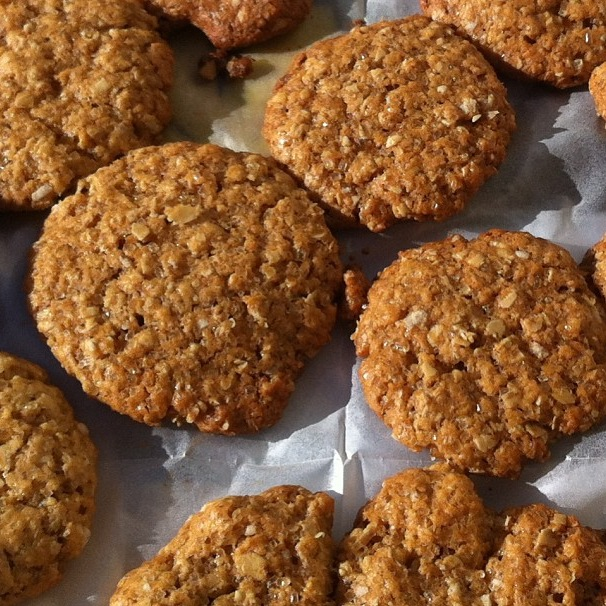
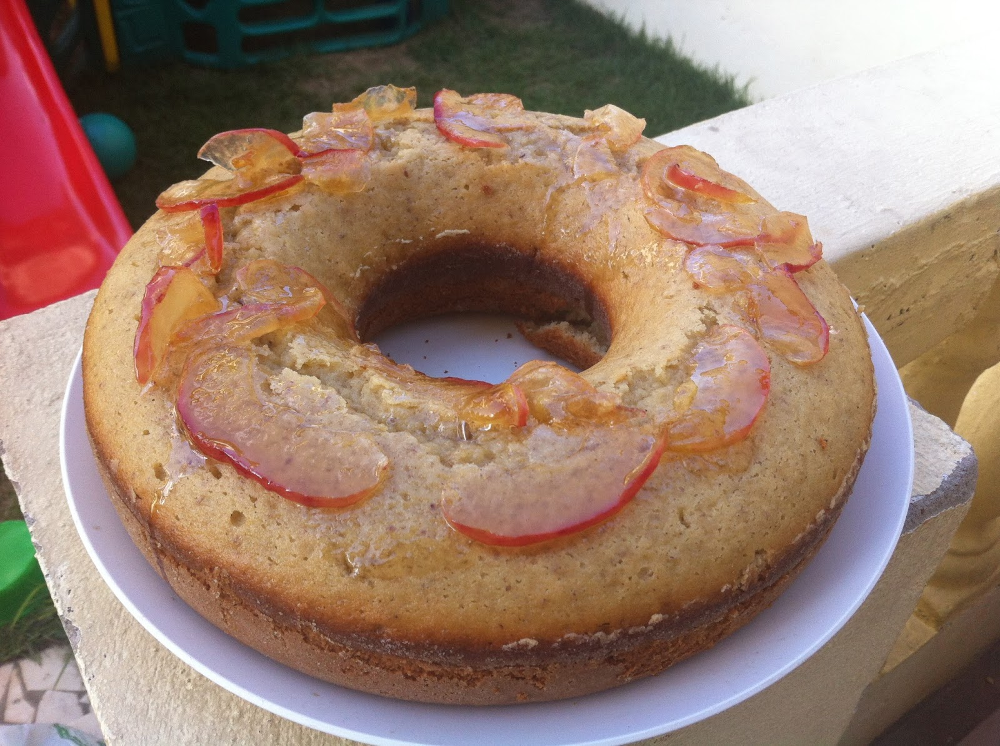
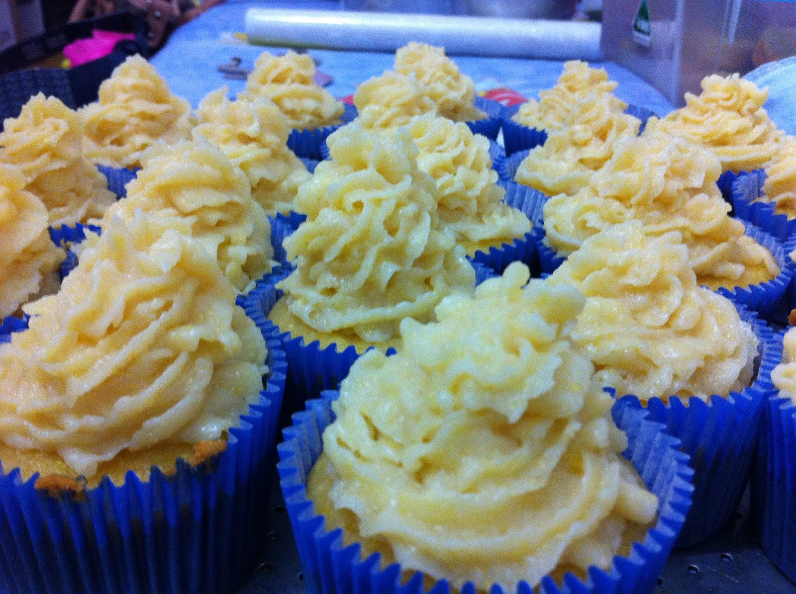
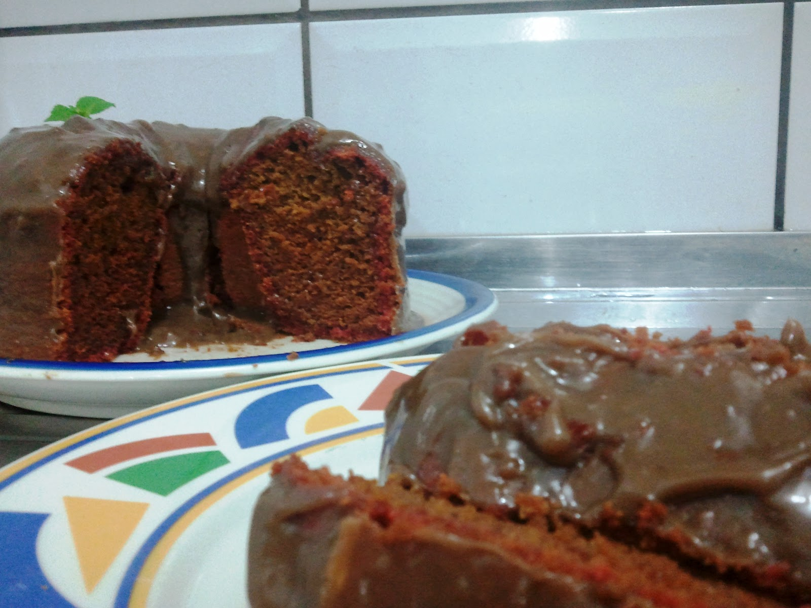
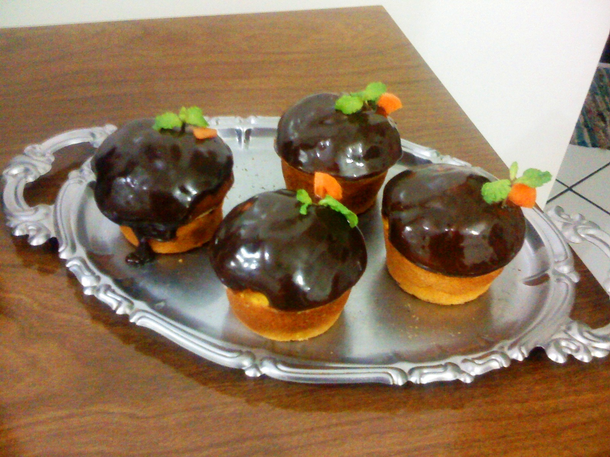
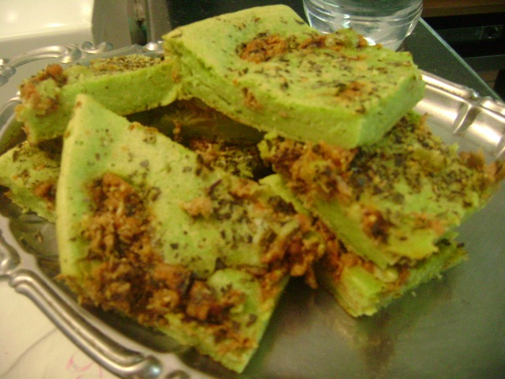

Por que comidinhas para o amor?
Todos já sabem que uma comida preparada com amor é muito mais saborosa. Quando essa comidinha é preparada para a "metade da laranja", torna-se ainda mais saborosa, pois o amor passa a ser o principal ingrediente!

Cookie de aveia
Fofuxos, essa receita é super fácil, gostosa e nutritiva! Feito com aveia, onde encontramos a Beta Glucana, uma fibra solúvel que tem capacidade de reduzir os níveis de colesterol ruim (LDL) no sangue, controla a pressão arterial e o diabetes. Outras fibras insolúveis auxiliam no bom funcionamento intestinal, reduzindo os riscos de diverticulite, obstipação crônica e outras patologias.

Bolo de Maçã
Amor, apresento pra vocês essa receita maravilhosa! E sabe o que melhor? Este bolo é SEM LACTOSE! Muito simples de fazer e é uma delícia!

Cupcake de milho
Essa é uma excelente opção para uma festa Junina. Um delicioso cupcake que é uma boa opção para casamentos com temáticas nordestinas, muito simples de preparar e com ingredientes acessíveis. Quem come não se arrepende!

Bolo de beterraba
Fofuxos, essa receita é super fácil, gostosa e nutritiva! Feito com aveia, onde encontramos a Beta Glucana, uma fibra solúvel que tem capacidade de reduzir os níveis de colesterol ruim (LDL) no sangue, controla a pressão arterial e o diabetes. Outras fibras insolúveis auxiliam no bom funcionamento intestinal, reduzindo os riscos de diverticulite, obstipação crônica e outras patologias.

Cupcake de cenoura
Amor, apresento pra vocês essa receita maravilhosa! E sabe o que melhor? Este bolo é SEM LACTOSE! Muito simples de fazer e é uma delícia!

Empanada Shrek
Essa é uma excelente opção para uma festa Junina. Um delicioso cupcake que é uma boa opção para casamentos com temáticas nordestinas, muito simples de preparar e com ingredientes acessíveis. Quem come não se arrepende!

Conquistando o amor pela boca!
É possível conquistar alguém, preparando uma comidinha especial?
Uma boa receita, uma sobremesa irresistível, um jantar romântico ou um lanchinho rápido e fácil de fazer... Tudo isso pode te ajudar a conquistar seu grande amor! Mas como?! Ora, agarrando-o "pelo estômago"! Desde 2012, a equipe "Comidinhas para o amor", tem mostrado que, através de suas deliciosas receitas, é possível ajudar casais apaixonados a fortaleceram os laços afetivos, criando comidinhas que são capazes de mexer com qualquer coração!
Copyright © Comidinhas para o amor - 2022